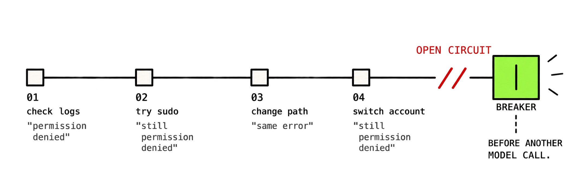

ProgressGate detects semantic stagnation in AI agent loops, even when every action looks different.
Add it to an agent
Different actions.
Same broken assumption.
ProgressGate looks past surface novelty and checks whether your agent is actually making progress.

| Step | Agent action / result | Gate | Key signals |
|---|
// once per run const run = gate.run({ goal }); // before your next expensive model call const result = await run.observe(step); if (result.decision === "HALT") return stop(); if (result.decision === "REPLAN") injectFeedback(result.reasonCode); // CONTINUE / WARN -> proceed as normal
A step count can't tell productive exploration from busywork. It cuts off a real investigation at the same count it lets a spinning agent burn through, because it has no idea the agent is still testing the same falsified assumption.
ProgressGate looks at whether the underlying assumption changed, not how many actions were taken.